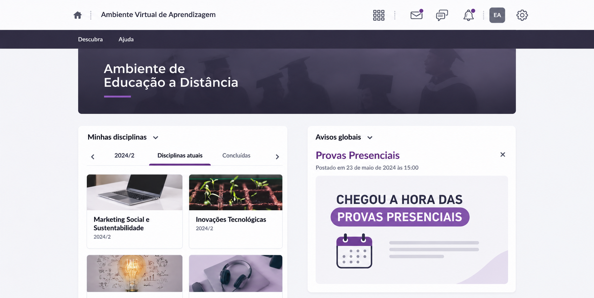
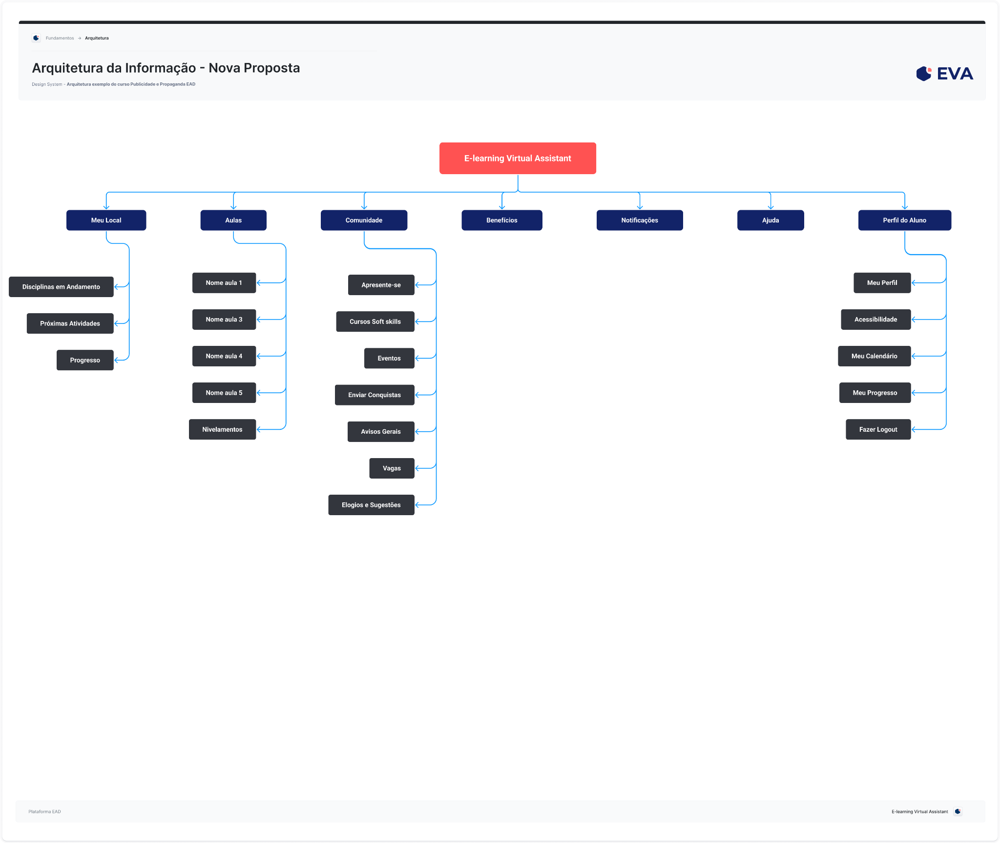
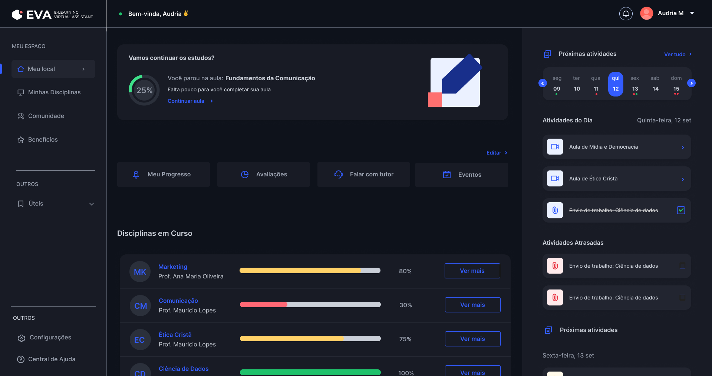
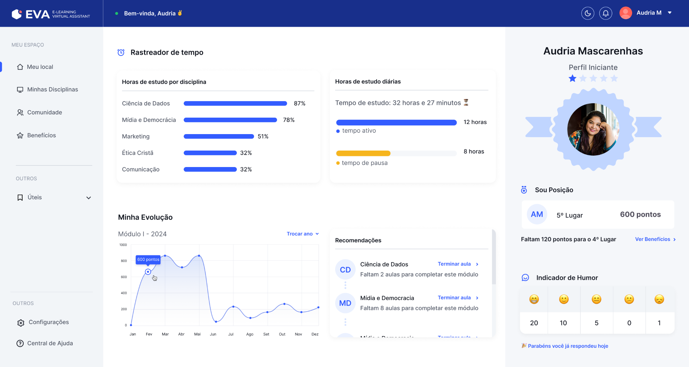
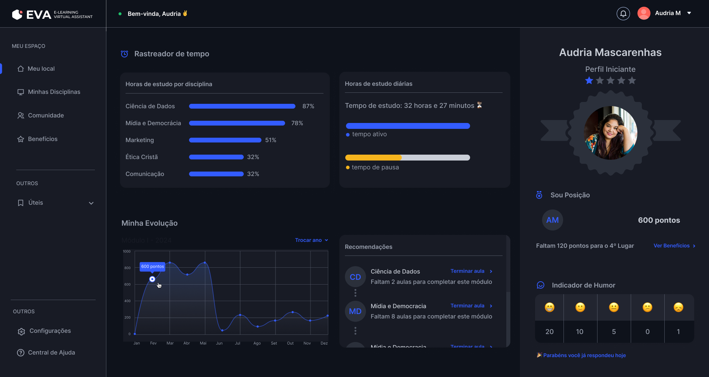
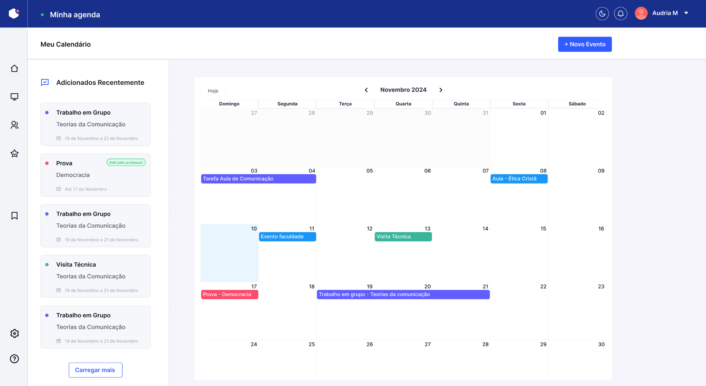
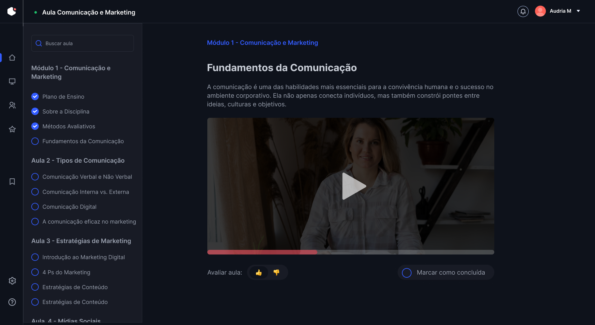
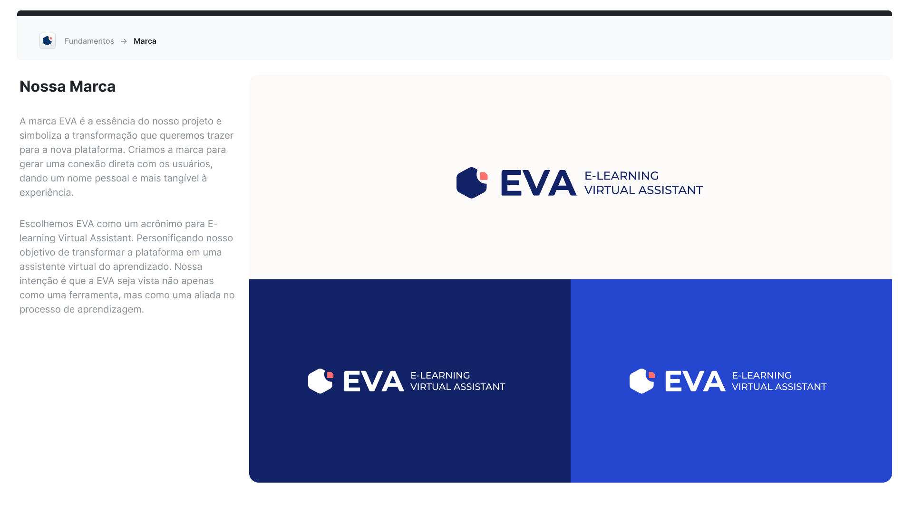
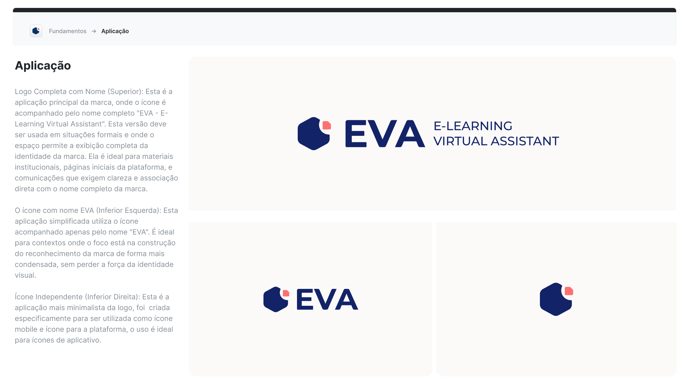

EVA.
Uma proposta para repensar a experiência de estudantes na educação a distância, conectando pesquisa, organização da informação e gamificação.
A plataforma que investigamos
Nosso ponto de partida foi compreender a experiência dos estudantes em um ambiente virtual de aprendizagem. Investigamos como as informações estavam organizadas, quais dificuldades apareciam na navegação e como a plataforma fazia parte da rotina de estudos.

Como melhorar a experiência de quem estuda a distância?
Essa pergunta orientou nosso Trabalho de Conclusão de Curso. Investigamos a experiência dos estudantes na plataforma de Educação Adventista para compreender dificuldades de navegação, hábitos de estudo e necessidades. Também exploramos como a gamificação poderia contribuir para a motivação e a continuidade da aprendizagem.
Antes de desenhar, fomos ouvir.
A pesquisa reuniu perspectivas de estudantes, professores e pessoas envolvidas no contexto educacional. O Double Diamond ajudou a organizar as etapas do trabalho e o UXDL Honeycomb serviu como referência para analisar a experiência de aprendizagem.
O que a pesquisa revelou.
Encontrar informações
Dificuldades na localização de conteúdos e na navegação pela plataforma.
Percepções diferentes
Professores apontaram diferenças de facilidade de uso entre Canvas e D2L.
Motivação e progresso
O interesse por feedback de progresso contrastou com a menor aceitação de rankings.
dos estudantes de 18 a 24 anos demonstraram interesse em receber feedback sobre seu progresso. Um sinal de que a gamificação poderia ir além de pontos e competições.
Organizar para tornar mais claro.
Com os dados coletados, desenvolvemos quatro personas e uma jornada do usuário, além de benchmarking e análise de interfaces. A proposta de arquitetura da informação buscou organizar caminhos e conteúdos do ambiente de aprendizagem.

Uma experiência pensada para acompanhar os estudos.
As telas a seguir apresentam a proposta visual desenvolvida no projeto. Elas ilustram caminhos para reunir informações de estudo, visualizar o progresso e organizar atividades em um mesmo ambiente.
Meu espaço.
Uma visão inicial que reúne disciplinas em andamento, atividades e um convite para continuar de onde o estudante parou. O objetivo da proposta é facilitar o acesso às informações mais relevantes da rotina de estudos.

Tela inicial · modo claro
Acompanhar a evolução.
Indicadores de tempo de estudo, evolução por disciplina, recomendações e elementos de reconhecimento. A proposta explora maneiras de oferecer visibilidade sobre a jornada de aprendizagem.


Uma agenda para se organizar.
O calendário reúne aulas, avaliações e compromissos acadêmicos. A proposta oferece uma visão temporal das atividades para apoiar o planejamento dos estudos.

O conteúdo da aula em foco.
Uma área de aprendizagem com navegação entre conteúdos, busca de aulas, vídeo e marcação de conclusão. A interface procura tornar a estrutura das aulas mais visível durante o estudo.

Uma identidade para a proposta.
Além das interfaces, o projeto desenvolveu a identidade EVA — E-learning Virtual Assistant — para representar a proposta de ambiente de aprendizagem.


“Esse trabalho me mostrou a importância de olhar para além da interface. Antes de propor mudanças, é preciso compreender as pessoas, suas rotinas e a maneira como utilizam a tecnologia.”
Foi uma oportunidade de aproximar pesquisa, Educação e Design na investigação de um problema real.